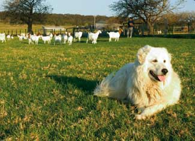

Natural Livestock Protectors: Guard Llamas, Dogs And Donkeys
Turn to these reliable guard animals for a natural, sustainable method to keep predators away from sheep and goats.
By Jenna Woginrich
Dec. 4, 2008
My personal introduction to raising livestock has been getting to know my scrappy trio of sheep named Marvin, Maude and Sal. As a farmer-in-training, I depend on them to teach me the ropes of shepherding 101. But sheep aren't my only mentors. Over the past few months I've been in cahoots with border collies and their handlers, and even the occasional donkey or llama. That’s how I ended up at Taravale Farms, where I met my first farm security officer, hot on the job.
Her name was Bella, and she was a maremma - a large white dog of Italian heritage. Maremmas have a goofy look, with floppy ears and a playful smile, but they also possess a true working dog stoicism. I was standing beside Bella near a fence, my fingers stroking her thick white fur. It felt as tough and weatherproof as the wool on the backs of the Scottish blackface ewes we were both watching from behind a gate. And Bella was as fixated on those ewes as a baby on Teletubbies. Intense stuff.
On the other side of the fence, border collies were herding sheep. Barb and Bernie Armata, the owners of Taravale Farms, have a fairly large flock and depend on their dogs to both serve and protect. This duty is split between two breeds. The collies are the farmhands and the maremmas, including Bella, form their own little cabinet of homeland security. The herders get most of the limelight around here, but I doubted Bella was impressed by the sheepdog trial ribbons on the fridge. After all, ribbons can’t offer much protection against a coyote.
Bella had a family to protect, which isn’t some overly dramatic way of stating her duty. Bella and countless other dogs, llamas and donkeys see their stock as siblings, and thus they effectively guard other farm animals, especially sheep and goats, from natural predators.
Why Do Farmers Need Guard Animals?
Farmers and homesteaders are quickly learning that livestock guardians are not only effective in their work, but also better for the flock (not to mention the farmer’s peace of mind). A watchful eye from one of these animals can scan the fence lines for coyotes, feral dogs or even wolves - and tangle with them if need be.
Livestock guardians are also a more sustainable solution to the problem of predation. They keep livestock safe 24-hours a day without farmers having to resort to poisons, lamb collars, rifles or other dangerous deterrents that have mixed results at best. Some ranchers even report that poisons only aid the coyote population around their property, by ensuring that the savviest bait-avoiding ’yotes make up a large part of the gene pool. So instead of putting up with fewer predators, they have to deal with progressively smarter ones.
So in lieu of standing in a guard tower with a .22, wrestling poison-baited collars onto lambs, spending thousands on reinforced electric fences or building extravagant enclosed animal housing, more and more farmers are employing the ever-so-vigilant llama, donkey or dog. Perhaps one of these bruisers can help you watch over your own?
Determined Dogs
Dogs such as the Polish tatra, Slovak cuvac and Italian maremma are just a few of dozens of guardian dogs still being bred today. They are introduced to their sheep as puppies and grow up part of the flock. But unlike their wooly brethren, when danger rears its ugly head they don’t run away, they stand their ground. These dogs will work alone or in small packs, scaring off wolves, coyotes or wild dogs; some have even been known to bark at circling birds of prey. Dogs of these protective breeds have been doing this for centuries. Their ancestors trotted outside ancient Rome, Tibet and Turkey. Some say these dogs are higher maintenance than llamas and donkeys, but they are usually the most effective livestock guardians out of those three species. It’s hard not to be intimidated by a full set of sharp teeth.
Low-Maintenance Llamas
While llamas are fairly new to the livestock guardian scene, they are proving to be effective and for a lot of people they offer the protection of a dog without the added maintenance. A llama will generally eat the same feed your sheep or goats would eat, so you might save a lot of money on kibble. (Most dogs aren’t satisfied when you point to a lawn and say bon appetit). Llamas also don’t bark, scare neighbors, gnash teeth or snap at wandering 3-year-olds. They also don’t seem to wander as often as their canine counterparts. (Wandering is one of the top reasons people lose their livestock dogs.) Also, a llama is more likely to respect that fence than a large leaping dog.
Defensive Donkeys
Another popular option is the lone donkey. A singular donkey placed with a herd treats its flock mates like its own. They are naturally defensive against dogs. If you disagree, let Rover walk up to any Jenny with her offspring! With those instincts to protect still very strong, donkeys make for fine security guards. Also, farm donkeys are a declining population in America, and sorely in need of revival on the modern farm. What was once the all-purpose ATV of the farm, used in everything from carrying packs to pulling canal boats along river edges, now has receded into the patchwork of the past. Employing a good donkey to watch your stock is a way to save this noble animal from entropy.
So if you’re interested in adding a llama to your life, an ass to your grass, or plopping down a puppy with this spring’s lambs - do your homework. While these animals are generally useful guardians, like any working animals, some work better than others. It depends on your location, your herd and the history behind the animal you’re planning to put to work. Some dogs, llamas or donkeys will hightail it for the barn when predators terrorize the neighborhood. So research your breeders! If you can, watch the prospective donkey or llama with its current flock. Ask for references from past customers so you can know how other dogs are doing with their current charges. You’ll save unnecessary stress by making sure your potential guardian, whatever the species, is true to its job.
Or you could have Bella come by and give them the once over. I’m pretty sure she’s got an eye for this sort of thing. After all, it’s in her blood.
Have you tried employing one of these guard animals on the farm? Share your experiences by leaving a comment below.
|
 NICKY GORDON/ISTOCKPHOTO Some dog breeds, such as the Maremma shown here, will help keep coyotes and wild dogs away from the flock. |
 Michael Westhoff/Istockphoto A singular donkey pastured with sheep or goats will protect them from predators. |
|